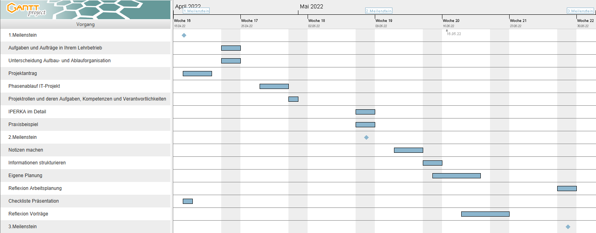

Phasenablauf IT-Projekt
Fünf Aufträge aus meinem Lehrbetrieb
- Maintenance-Kit austauschen
- Arbeitsplatz verkabeln
- PC neu aufsetzten
- Mini-PC einrichten für Infoscreen
- Neue Tablets für die Montage
Beschreibung der Aufträge, Zuordnung in Projektphase und Begründung der Zuordnung
Maintenance-Kit austauschen:
Bei einem Drucker, welcher immer einen schwarzen Streifen aufs Blatt schmierte, habe ich das Maintenance-Kit ausgewechselt. Zum Maintenance-Kit gehören diverse Röllchen, über welche das Blatt durch den Drucker transportieren sowie ein Heizkörper. Ich habe mir dazu ein Youtube-Video angeschaut, damit ich wusste, wo welches Teil hingehört. Nachdem ich alle Röllchen gewechselt hatte, führte ich nochmals einen Probedruck durch. Leider blieb das Druckbild unverändert. So wechselte zusätzlich den Heizkörper aus und nach einem Probedruck sah die Druckqualität wieder aus wie neu.
Projektphase: Realisierung
Begründung: Ich habe mich über ein Video informiert und habe es danach umgesetzt.
Arbeitsplatz verkabeln:
Drei Mitarbeiter haben einen höhenverstellbaren Tisch bekommen. Bevor die alten Tische entfernt werden konnten, musste ich diese zuerst räumen. Die Lieferanten der neuen Tische nahmen die alten wieder mit und stellten die neuen am richtigen Ort auf. Sobald die neuen Tische standen, stellte ich die Monitore wieder auf und verkabelte alles neu.
Projektphase: Realisierung
Begründung: Ich habe die alten Tische geräumt. Nachdem die neuen Tische aufgestellt waren, habe ich die Verkabelung durchgeführt.
Mini-PC einrichten für Infoscreen:
Ich und mein Mitstift haben den Auftrag bekommen, uns für den Fernseher am Empfang etwas einfallen zu lassen, um automatisiert eine Website anzeigen zu lassen. Zuvor musste alles jeden Morgen manuell über den Browser vom Smart-TV eingestellt werden. Um eine Webseite auf dem Fernseher am Empfang anzuzeigen, haben wir einen HP EliteDesk 800 G8 bestellt. Diesen habe ich so konfiguriert, dass er morgens jeweils um 07:30 hochfährt, sich automatisch mit einem lokalen User anmeldet, automatisch Google Chrome im Vollbild mit der richtigen Webseite startet und am Abend um 17:00 wieder herunterfährt. Dies testeten wir am Fernseher in unserem Büro.
Projektphase: Konzept
Begründung: Wir haben uns überlegt, wie das Projekt am besten ungesetzt werden kann und einen Probelauf gemacht.
PC neu aufsetzen
Wenn ein PC zu einem anderen Mitarbeiter wechselt, setzte ich ihn über einen USB-Stick zurück. Danach muss mit dem Mitarbeiter abgeklärt werden, welche Programme er für seine Arbeit benötigt. Diese Software installieren wir auf dem PC. Wenn sich alles für den Mitarbeiter notwendige auf dem Gerät befindet, übergeben wir es ihm und helfen bei der Datenübertragung. Sein altes Gerät bewahren wir - für den Fall, dass etwas fehlen sollte - noch für ca. 2 Wochen auf.
Projektphase: Realisierung
Begründung: Ich führe alles notwendige aus, damit der Mitarbeiter mit seinem neuen PC arbeiten kann.
Neue Tablets für die Montage
In unseren Montage-Abteilungen haben wir über einen Zeitraum von ca. 3 Monaten alle Tablets ausgewechselt. Die fertig aufgesetzten Tablets brachten wir in die Montage und instruierten die Mitarbeiter über die neuen Geräte.
Projektphase: Einführung
Begründung: Aufbau und Instruktion bei den Mitarbeitern.
Mein Projekt in der Sekundarschule
Bei meiner Projektarbeit in der Sekundarschule habe ich eine Webseite mit HTML und CSS für die Ferienwohnung, in der wir unsere Skiferien seit mehr als 10 Jahren verbringen, programmiert. Zudem habe ich ein Logo für die Ferienwohnung gestaltet.
Webseite Ferienwohnung
Quellen Bilder: Joel Schatt
Die vorherige Homepage der Familie Greber war sehr veraltet, weshalb ich auf die Idee gekommen bin, ihnen eine neue zu erstellen.
Dabei habe ich gelernt ein Projekt mit allen Phasen umzusetzen. Da ich mich anfangs nicht mit HTML und CSS auskannte, musste ich mich zuerst darüber informieren. Ich lernte, dass es manchmal viel Geduld braucht, bis man seine Vorstellungen umsetzen kann. Zudem musste ich die Zeit gut einplanen, um bis zum Abgabetermin die Homepage und die Dokumentation fertig zu haben.
Gantt-Diagramm E-Portfolio
Reflexion
Ich versuchte bei der Planung die Prüfungen in der Schule sowie meine privaten Termine zu berücksichtigen. Die Erstellung des Diagramms war dank “GanttProject” sehr einfach. Es ist mir nicht immer gelungen nach Plan zu arbeiten, denn teilweise musste ich mehr Zeit für das Lernen für Prüfungen aufwenden als erwartet oder es kamen private Termine dazwischen. Insgesamt hat mir das Diagramm geholfen, die Aufgaben gut einzuteilen.
Projektrollen und deren Aufgaben, Kompetenzen und Verantwortlichkeiten
Auftraggeber
Der Auftraggeber stellt den Auftrag. Er fällt wichtige Entscheidungen, welche das Endergebnis beeinflussen.
| Aufgaben | Kompetenzen | Verantwortung |
|---|---|---|
| Erteilung Auftrag zum Projekt | Oberste Entscheidungskompetenz | strategische Gesamtverantwortung |
| Sicherstellung Finanzierung | Projektbeauftragung | rechtzeitiges Entscheiden |
| Projektfortschritt überwachen | Projektabbruch |
Projektleiter
Der Projektleiter ist dafür verantwortlich, das Projekt so zu steuern, dass es erfolgreich abgeschlossen wird und die Projektziele erreicht werden.
| Aufgaben | Kompetenzen | Verantwortung |
|---|---|---|
| führt und überwacht Projekt | darf Projektergebnisse akzeptieren oder ablehnen | Erreichung der Projektergebnisse und Ziele: Zeit, Kosten, Qualität |
| erarbeitet Projektplan | Mitwirkung bei Zieldefinition | |
| rapportiert Projektfortschritt | Bestimmung der Fachverantwortlichen | |
| Ressourcen organisieren |
Projektmitarbeiter
Die Projektmitarbeiter führen die einzelnen Arbeitsschritte durch.
| Aufgaben | Kompetenzen | Verantwortung |
|---|---|---|
| Planungsunterstützung | die Kompetenzen sind vom Auftrag abhängig | Professionelle Umsetzung der gestellten Aufgaben |
| Umsetzung gestellter Aufgaben |